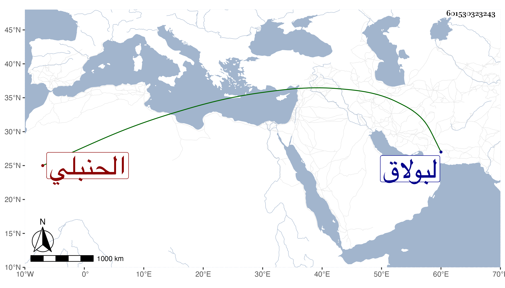

0902Sakhawi.DawLamic.ITO20230111-ara1.EIS1600.601530323243
Biography ID: 601530323243
370
حسن بن إبراهيم بن عمر بدر الدين بن البرهان الحنبلي الماضي أبوه ويعرف بابن الصواف . وحفظ المحرر وأخذ عن والده والبرهان بن حجاج الابناسي وتكسب بالشهادة في حانوت باب الفتوح ، رأيته كثيرا وكان فاضلا منزلا في الجهات ذا عزم وجلادة على المشي بحيث كان يمشي غالب الليالي لبولاق لسكناه ظنا هناك مع ثروته وقرابته من البدر البغدادي قاضي مذهبه ولذا لما مات أسند وصيته إليه وجعل له إما مائة دينار أو نصفها .
